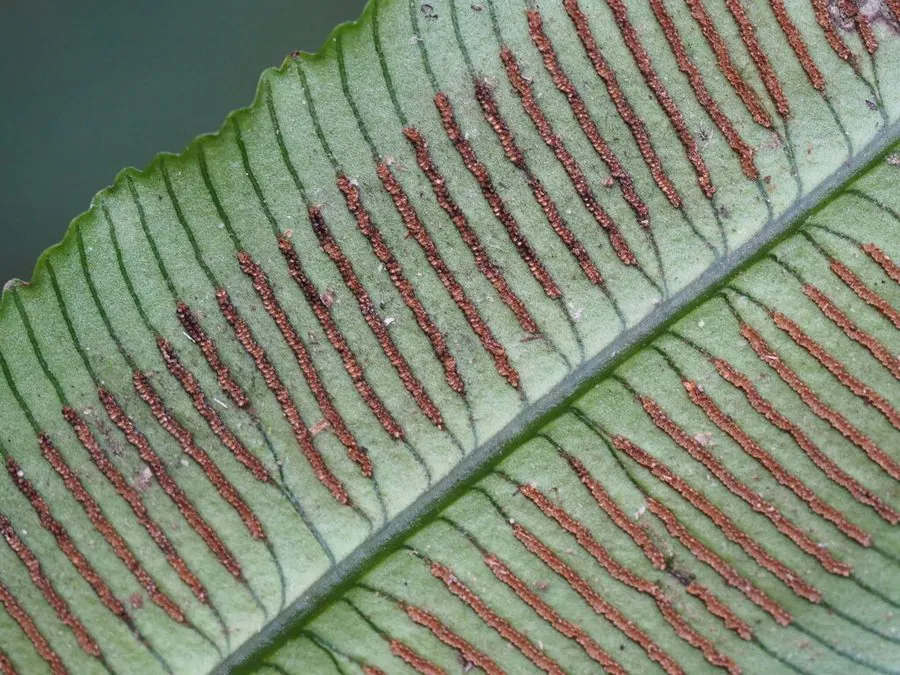

蕨类与裸子植物 · 植物界
台湾观音座莲 Angiopteris somae

合囊蕨科观音座莲属大型陆生蕨类，叶柄基部膨大如观音座，二回羽状叶巨大，是台湾与华南林下的古老蕨类。
- 分类
- 门蕨类植物门纲合囊蕨纲目合囊蕨目科合囊蕨科属观音座莲属
- 栖息环境
- 海拔 500–1500 米的山地林下与溪谷，喜温暖湿润、半阴环境
- 地理分布
- 中国台湾特有种，主要分布于台湾中低海拔山区
- 保护级别
- IUCN 暂无评估；中国特有种，野生种群因森林开发而减少
物种志
台湾观音座莲为大型陆生蕨类，高 1–2 米，具粗壮肉质根状茎。叶柄基部膨大、肉质，呈莲座状排列，形似观音的坐台，因此得名。叶为二回羽状，长 2–3 米，小羽片披针形，边缘具细齿，叶脉分离。孢子囊群沿小脉着生，长圆形，成熟时褐色，靠近叶缘排列。
本种为中国台湾特有种，生于海拔 500–1500 米的山地林下与溪谷，喜温暖湿润、半阴的环境。观音座莲属是合囊蕨目中较原始的类群，叶柄基部膨大、叶脉分离，对研究蕨类演化具有重要意义。台湾观音座莲的野生种群因森林开发与采挖而减少，需加强保护。栽培需高湿、半阴与疏松肥沃的酸性土壤，冬季需防寒。
形态与习性
- 株高1–2 米，根状茎粗壮肉质
- 叶二回羽状，长 2–3 米
- 叶柄基部膨大、肉质，呈莲座状
- 孢子孢子囊群长圆形，沿小脉着生
- 光照喜半阴，忌强光直射
- 水分喜高湿，需充足浇水与喷雾
- 主要用途园林观赏、蕨类演化研究与种质保护
趣味知识
- 观音座莲的叶柄基部膨大、排列成莲座状，像观音菩萨的坐台，因此得名。
- 台湾观音座莲是台湾特有种，主要分布在中低海拔的山地林下。
- 观音座莲属的叶脉分离，是合囊蕨目原始特征的体现。
- 它的孢子囊群长在小脉上，成熟时呈褐色，靠近叶缘排列。